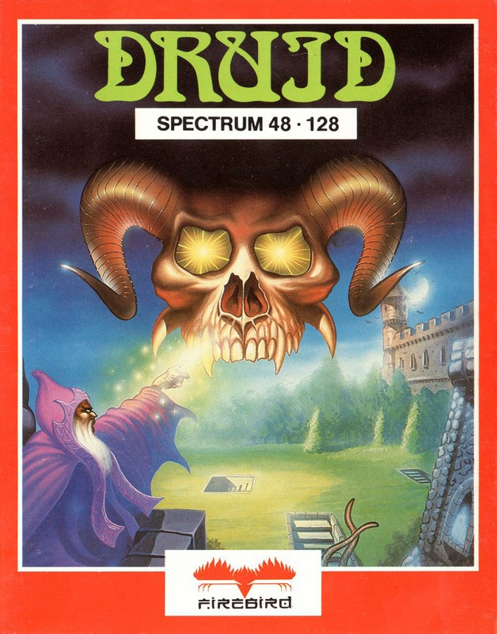
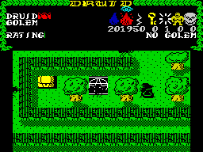

Druid


{kind=link}

| Publisher: | Firebird |
| Price: | £7.95 |
| Year: | 1986 |
| Source: | CRASH, Issue 35 |

Four skulls of immense evil have been brought together by the evil Princes of Darkness and placed in a tower. Gathered in the same location, their power to spread destruction, plague and dereliction is vastly amplified and the land is suffering. You, an aging mystical Druid, must destroy the evil skulls to thwart the Princes of Darkness.
The skulls reside in lower levels of an eight-level tower and the game begins in the fields surrounding the skulls’ new resting place. You must penetrate the tower, defeat the demons, destroy the skulls and make good your escape.

outside the tower, the heroic Druid
sees a Power Pentacle but can’t quite
reach it...
The action is viewed from above and the flip screens that make up each level contain walls, or hedges in the open country, which combine to make up a maze of passageways. Demons scurry round the screens and need to be eliminated rapidly — contact with them saps the magician’s energy and the longer he stays in one place the more demons turn up.
The Druid can move in four directions and can cast Water, Fire or Electricity spells with a press of the fire button — toggle between them with the P key. Each time a spell is cast the Druid’s capacity for casting that particular spell reduces, and the counter under the respective icon decrements. Selecting the appropriate spell for the type of demon being attacked is an important factor of the game.
Apart from the workaday fire-button-controlled spells, the Old One has four powerful spells at his command. Providing the inventory contains a supply of the appropriate spell material, these extra spells can be invoked with a press of the correct number key. The Key Spell opens doors; the Invisibility Spell hides the hero from the gaze of the demons for a while and temporarily immobilises them; the Golem Spell conjures up an assistant, and the Chaos Spell is a magical smart bomb that destroys all the nasties on the current screen. The Chaos Spell is the only spell powerful enough to destroy one of the skulls and has the pleasant side-effect of topping up the Druid’s energy whenever it is cast.
Energy is added to the Druid’s status bar when he stands on one of the Pentacles of Life that are scattered around the tower. Chests are a source of useful spellpower — all the Druid has to do is walk up to a chest and it will open to reveal its contents. Careful thought is needed before selecting an item from a chest, however, as the Princes of Darkness sense that one of their store cupboards has been opened the moment something is removed and destroy the chest and its remaining contents instantly.
If things are getting a bit hectic, casting a Golem Spell invokes a handy acolyte. The Golem can either be controlled by a second player or by separate keyboard commands and it really comes into its own as a bodyguard. Your assistant can be given three commands: send, follow and wait, and has its own Energy bar that is reduced by contact with nasties. On the plus side, the touch of a Golem is instantly fatal to demons!
To play the game efficiently, care must be taken to select the right object from chests once they are opened. A map will prove essential if you are to stand any chance of achieving the legendary Light Master status — at the end of a game, one of sixteen rankings available is awarded, and they start with Halfwit...
CRITICISM
“Druid is amazingly good, and very easy to get into. The layout of the screen is excellent, giving a good mix of large characters and lots of colour — without any attribute problems at all! The game is smooth to play and contains loads of big, bad baddies. I like the way you can swap easily between different types of spell casting, and also the way you go around picking up different things from chests. This game is extremely addictive, loads of fun to play and quite different from your average ‘run of the mill’ arcade/adventure.”
“Is this the start of a flood of variants inspired by the arcade game Gauntlet? If the rest are as brilliant as this, then we’re all in for a good time. The gameplay is great — your Druid is easy to control, so whizzing around the place is great fun, although it is very hard to get anywhere as the rampaging nasties gang up quickly and tend to kill you off rapidly. After a lot of play, however, dealing with them becomes slightly easier. Graphically, Druid is presented well: the characters shuffle around smoothly and the playing area is highly detailed, with excellent shading. The sound is a little disappointing when compared to the graphics, but it is adequate. I strongly recommend Druid as it is playable and ever so compelling.”
“Oh yes. This game is superb, one of the best I’ve honoured my Spectrum with in a long time. Graphics are excellent, with lots of colour used over the various levels, and as far as playability is concerned, well, Druid is something else! Comparison with Gauntlet is, I suppose, unavoidable, but I would certainly like to see US Gold come out with a better game than this — that’ll take some doing! Everything about Druid is excellent: it’s one of my fave games of the moment. And it’s incredibly addictive too; if I didn’t have to write this comment, I’d still be playing it. ’Nuff said?”
COMMENTS
| Control keys: | 1 cast Key Spell, 2 cast Invisibility Spell, 3 cast Golem Spell, A control Golem, H and A control Golem separately from joystick, 4 cast Chaos Spell; Z left, X right, K up, M down, SPACE fire, P toggle Water, Fire and Electricity spells |
| Joystick: | Kempston, Cursor, Interface 2 |
| Keyboard play: | Responsive |
| Use of colour: | Neat, and without attribute problems |
| Graphics: | Fairly large and well detailed, with neat shading effects |
| Sound: | Spot effects only |
| Skill levels: | One |
| Screens: | Large eight-level play area |
| General rating: | A compelling demon-bashing game |
| Use of computer: | 87% |
| Graphics: | 91% |
| Playability: | 90% |
| Getting started: | 88% |
| Addictive qualities: | 90% |
| Value for money: | 88% |
| Overall: | 90% |